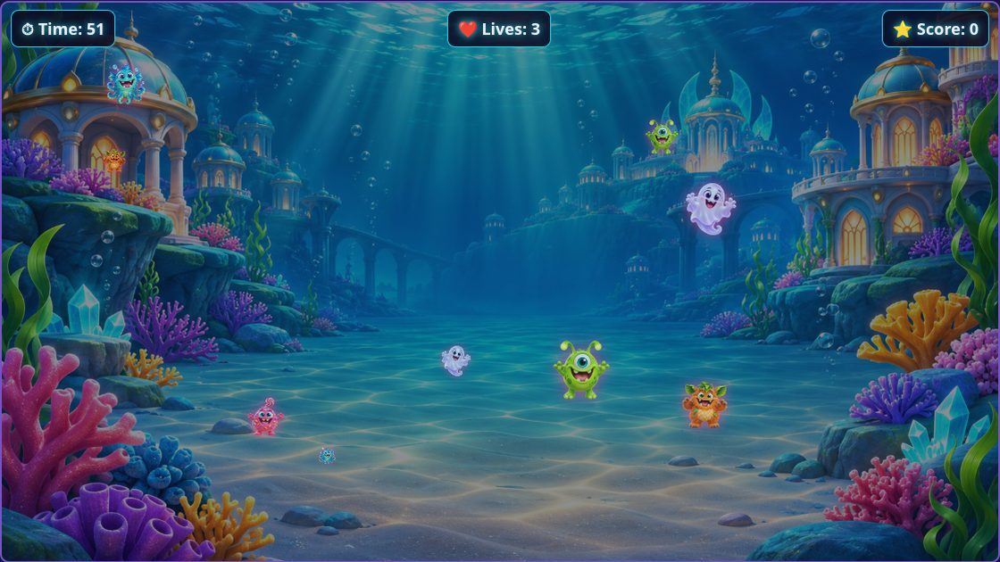

ACTION
Ball to Wall
Throw a ball at the monsters on the wall before time runs out. Pick a world (space station, haunted castle, jungle temple, underwater city or candy land) and up to five monsters, or use your own pictures.